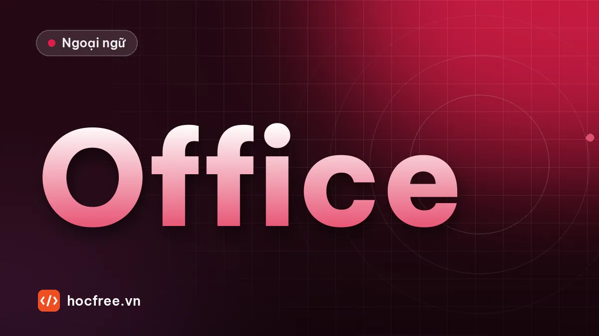

Từ vựng TOEIC chủ đề văn phòng và nhân sự
Khoảng 60 từ và cụm từ về văn phòng, thiết bị, họp hành, tuyển dụng, đào tạo, nghỉ phép, kèm câu ví dụ, cặp paraphrase và bài tập.

Học xong bài này, bạn sẽ
- Nắm khoảng 60 từ và cụm từ văn phòng, nhân sự
- Dùng được trong câu về họp, tuyển dụng, nghỉ phép
- Nhận ra từ đồng nghĩa hay được paraphrase trong đề
Nên học trước: Học 20 từ mỗi ngày bằng collocation và Anki
Nội dung bài viết
Văn phòng và nhân sự là chủ đề gặp nhiều nhất trong TOEIC: tuyển dụng, đào tạo, họp hành, nghỉ phép, chuyển phòng, thiết bị văn phòng. Bài này gom khoảng 60 từ và cụm từ theo nhóm, mỗi nhóm có câu ví dụ, kèm bảng paraphrase, tức những cách nói khác nhau của cùng một ý. Đây là thứ đề hay dùng để phân biệt đáp án đúng với bẫy.
Cách học: mỗi ngày chọn khoảng 20 mục, làm thẻ theo mẫu ở bài học từ theo collocation.
1. Văn phòng và thiết bị
| Từ / cụm | Nghĩa | Ví dụ |
|---|---|---|
| office supplies / stationery | văn phòng phẩm | Please order more office supplies. |
| photocopier / copy machine | máy photocopy | The photocopier is out of order. |
| out of order | bị hỏng (máy móc) | The elevator is out of order today. |
| cabinet / file cabinet | tủ hồ sơ | The contracts are in the file cabinet. |
| cubicle / workstation | chỗ làm việc ngăn vách | Each employee has a workstation. |
| reception / front desk | quầy lễ tân | Please sign in at the front desk. |
| premises | cơ sở, khuôn viên | Smoking is not allowed on the premises. |
| relocate / relocation | chuyển địa điểm | The office will relocate to the 5th floor. |
| renovate / renovation | cải tạo, sửa sang | The lobby is closed for renovation. |
| maintenance | bảo trì | Maintenance work is scheduled for Saturday. |
2. Họp hành và lịch làm việc
| Từ / cụm | Nghĩa | Ví dụ |
|---|---|---|
| agenda | chương trình họp | The budget is the first item on the agenda. |
| minutes | biên bản họp | Who is taking the minutes today? |
| postpone / put off | hoãn | The meeting has been postponed until Friday. |
| reschedule | dời lịch | Can we reschedule our call? |
| call off / cancel | hủy | They called off the event due to rain. |
| conference call | họp qua điện thoại / trực tuyến | We have a conference call with Tokyo at 3. |
| brief / briefing | tóm tắt, buổi phổ biến | The manager briefed us on the new project. |
| handout | tài liệu phát tay | Please take a handout before the session. |
| run late / behind schedule | trễ, chậm tiến độ | The project is running behind schedule. |
| ahead of schedule | sớm hơn kế hoạch | We finished ahead of schedule. |
3. Tuyển dụng
| Từ / cụm | Nghĩa | Ví dụ |
|---|---|---|
| job opening / vacancy / position | vị trí tuyển dụng | We have two job openings in sales. |
| applicant / candidate | ứng viên | Applicants must have two years of experience. |
| apply for a position | ứng tuyển | She applied for the position last week. |
| résumé / CV | sơ yếu lý lịch | Please attach your résumé. |
| cover letter | thư xin việc | Include a cover letter with your application. |
| qualifications | trình độ, bằng cấp | He has excellent qualifications. |
| requirement | yêu cầu | Fluency in English is a requirement. |
| reference | người giới thiệu, thư giới thiệu | Please provide two references. |
| hire / recruit | tuyển | We plan to hire ten new engineers. |
| job description | mô tả công việc | Read the job description carefully. |
4. Nhân sự, đào tạo, đãi ngộ
| Từ / cụm | Nghĩa | Ví dụ |
|---|---|---|
| personnel / human resources (HR) | nhân sự | Contact Human Resources for details. |
| orientation | buổi định hướng nhân viên mới | New employees attend a two-day orientation. |
| workshop / training session | buổi đào tạo | There's a safety workshop on Monday. |
| supervisor / manager | quản lý trực tiếp | Report any problems to your supervisor. |
| colleague / coworker | đồng nghiệp | She is very popular with her coworkers. |
| promote / promotion | thăng chức | He was promoted to senior engineer. |
| transfer | điều chuyển | She was transferred to the Singapore office. |
| performance review / evaluation | đánh giá hiệu quả làm việc | Performance reviews take place in December. |
| salary / wage | lương tháng / lương theo giờ | Wages are paid every Friday. |
| benefits | phúc lợi | The benefits include health insurance. |
| bonus / incentive | thưởng / khuyến khích | Staff receive a year-end bonus. |
| paid leave / time off | nghỉ phép có lương | I'm taking two days off next week. |
| sick leave | nghỉ ốm | He is on sick leave until Monday. |
| retire / retirement | nghỉ hưu | Mr. Park will retire at the end of the year. |
| resign / step down | từ chức | The CEO stepped down last month. |
| replace / successor | thay thế / người kế nhiệm | Ms. Lin will replace him as director. |
| workforce / staff | lực lượng lao động / nhân viên | We plan to expand our workforce. |
| shift | ca làm việc | I'm working the night shift this week. |
| overtime | làm thêm giờ | Overtime is paid at 1.5 times the normal rate. |
| dress code | quy định trang phục | The company has a casual dress code. |
Paraphrase hay gặp
Trong Part 3, 4, 7, bài nghe hoặc bài đọc dùng một cách nói, đáp án đúng dùng cách nói khác. Học theo cặp:
| Trong bài | Trong đáp án |
|---|---|
| The meeting has been pushed back to Friday. | A meeting was postponed. |
| We're looking for someone to fill the position. | The company is hiring. |
| She'll be taking over as head of sales. | She will become a department manager. |
| I'll be out of the office next week. | The speaker will be away. |
| The copier on the third floor isn't working. | Some equipment is broken. |
| Could you send me your CV? | Submit a résumé. |
| We're moving to a bigger building. | The company is relocating. |
Đoạn đọc kiểu Part 7
To: All staff
From: Human Resources
Subject: Orientation scheduleWe are pleased to welcome six new members to our workforce this month. Their orientation will take place on Monday, March 4, in Conference Room B. Because the room will be under renovation from March 11, the second session has been moved to the training center on Pham Van Dong Street. Supervisors are asked to meet their new team members at reception at 8:30 A.M. Please contact Ms. Vy in HR if you are unable to attend.
1. What is the purpose of the e-mail? (A) To announce a promotion (B) To provide details about training for new employees (C) To advertise a job opening (D) To request feedback
2. Why has the second session been moved? (A) A room will be renovated. (B) More employees will attend. (C) A supervisor is unavailable. (D) The training center is cheaper.
3. What are supervisors asked to do? (A) Contact Ms. Vy (B) Prepare handouts (C) Greet new staff at the front desk (D) Lead the first session
Xem đáp án
1. B – orientation cho new members = đào tạo nhân viên mới. 2. A – under renovation. 3. C – meet their new team members at reception được paraphrase thành greet new staff at the front desk.
Bài tập từ vựng
Điền từ: postponed, applicants, benefits, supervisor, out of order.
(1) All ______ will be contacted by e-mail. (2) The vending machine is ______ again. (3) The trip was ______ because of the typhoon. (4) Please ask your ______ before taking time off. (5) The job offers excellent ______, including a pension plan.
Xem đáp án
(1) applicants (2) out of order (3) postponed (4) supervisor (5) benefits.